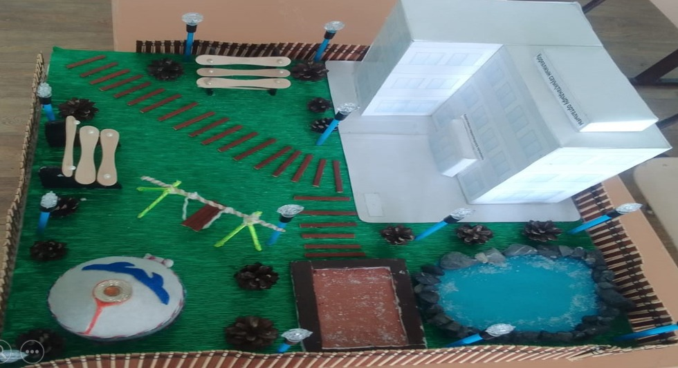

ЭКОЛОГИЧЕСКИЙ ПРОЕКТ
Открой
Коргалжын по-новому
Цифровой экологический маршрут, который помогает узнать природу Коргалжынского края и бережно относиться к окружающей среде.
Узнать больше ↓
О ПРОЕКТЕ
Eco Korgalzhyn
Eco Korgalzhyn — это цифровой экологический маршрут, созданный для знакомства с природными, географическими и туристическими особенностями Коргалжынского края.
Главная идея проекта — разработка цифрового экологического маршрута как инструмента устойчивого туризма.
На сайте можно узнать о правилах поведения на природе, ознакомиться с экологическим маршрутом и посмотреть карту местности.

На фотографии представлен макет будущего оздоровительного санатория, планируемого к созданию в Коргалжынском крае.
Сохраняя природу сегодня, мы сохраняем её для будущих поколений.